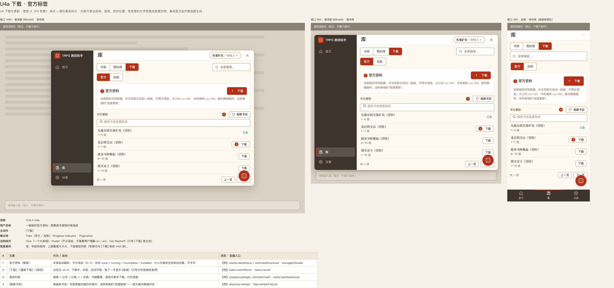
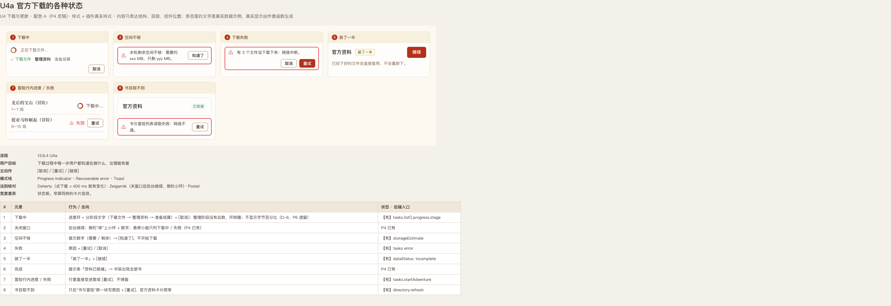
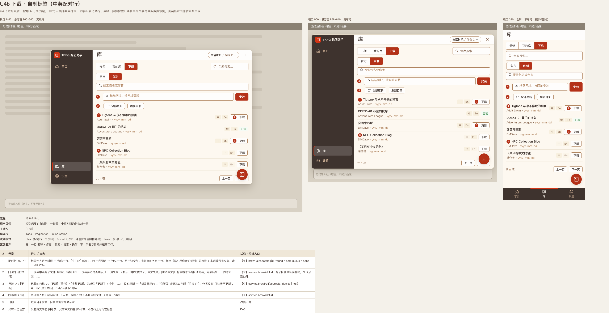
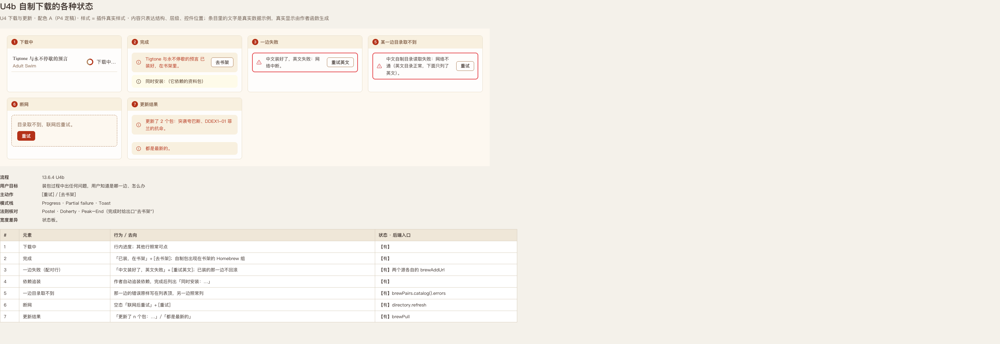
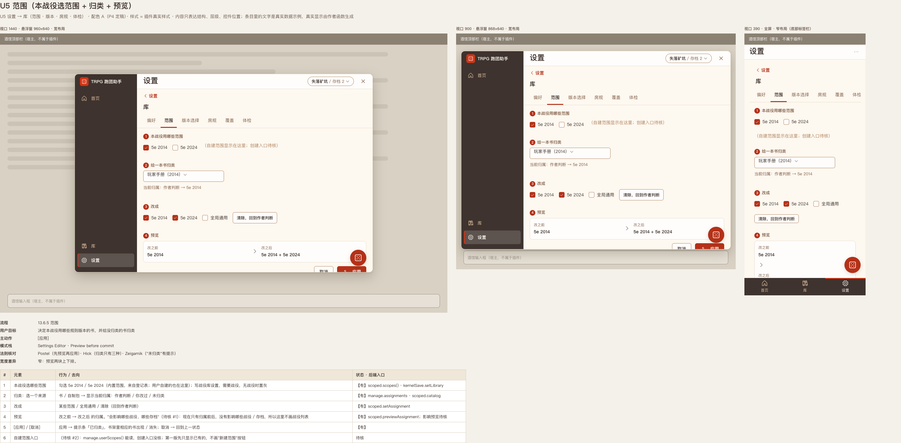
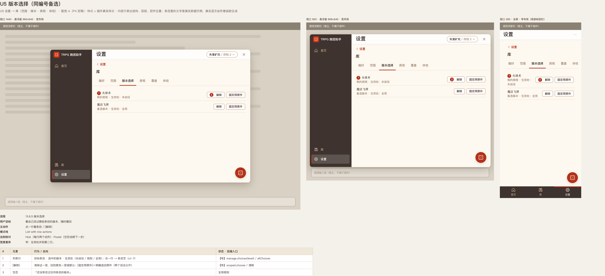
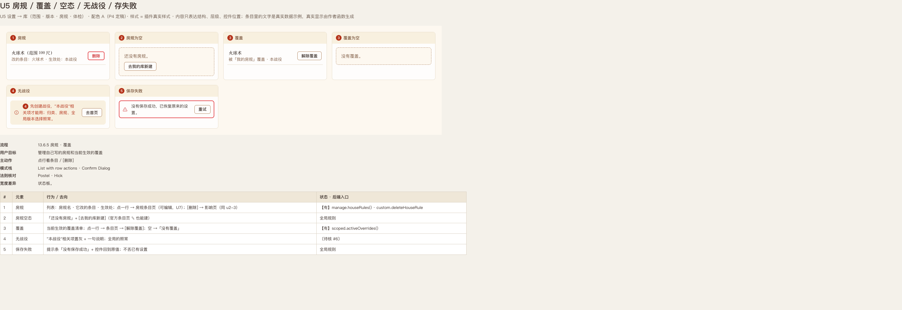
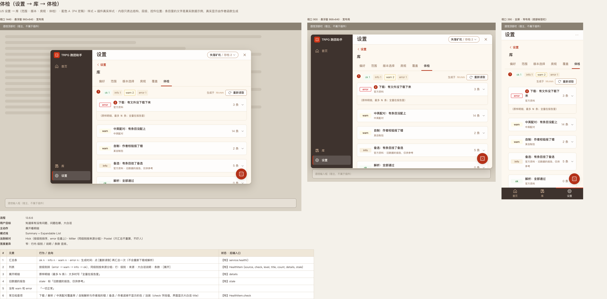
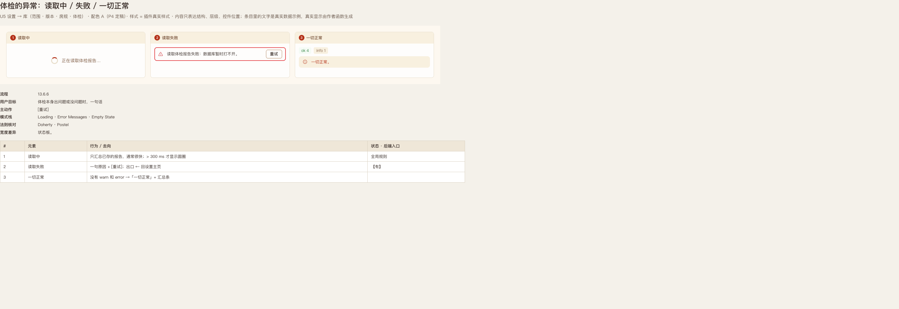

P5 库页线框（Gate 2）
共 30 屏，每屏三种宽度：1440（悬浮窗 960×640）、900（悬浮窗 868×640）、390（全屏，底部标签栏）。配色 = P4 配色 A，样式 = 插件真实样式，类名沿用 trpg-*，库页新增的以 lib- 开头（见 p5.css）。点卡片看大图和标注；说明见 README.md。
U1 条目表格列表 + 详情壳
 U1a 表格列表（法术示例）13.6.1 U1a
U1a 表格列表（法术示例）13.6.1 U1a U1b 条目详情壳（正常）13.6.1 U1b
U1b 条目详情壳（正常）13.6.1 U1b U1c 术语跳转 + 返回栈13.6.1 U1c
U1c 术语跳转 + 返回栈13.6.1 U1c U1b 详情壳的异常：不可见 / 没有 / 读取失败13.6.1 U1b
U1b 详情壳的异常：不可见 / 没有 / 读取失败13.6.1 U1b U1d 中英切换（对上了 / 灰掉 / 有多个）13.6.1 U1d
U1d 中英切换（对上了 / 灰掉 / 有多个）13.6.1 U1d U1e 图片：点开才取13.6.1 U1e
U1e 图片：点开才取13.6.1 U1e U1f 备选与覆盖（版本选择 / 解除）13.6.1 U1f
U1f 备选与覆盖（版本选择 / 解除）13.6.1 U1fU2 库总览（书架 · 全库搜索）
 U2a 书架（正常）13.6.2 U2a
U2a 书架（正常）13.6.2 U2a U2a 书架的异常：空 / 无战役 / 书目失败 / 卸载被拒13.6.2 U2a
U2a 书架的异常：空 / 无战役 / 书目失败 / 卸载被拒13.6.2 U2a U2a 卸载 → 影响页13.6.2 U2a · 13.6.0 影响页
U2a 卸载 → 影响页13.6.2 U2a · 13.6.0 影响页 U2b 全库搜索悬浮窗13.6.2 U2b
U2b 全库搜索悬浮窗13.6.2 U2b U2b 搜索的状态：加载 / 无结果 / 还没输入13.6.2 U2b
U2b 搜索的状态：加载 / 无结果 / 还没输入13.6.2 U2bU3 包 / 书内容页
 U3 官方书内容页
U3 官方书内容页 U3 自制包内容页（依赖缺 / 有备选）
U3 自制包内容页（依赖缺 / 有备选） U3 的异常：0 条匹配 / 包是空的 / 读取失败 / 加载中
U3 的异常：0 条匹配 / 包是空的 / 读取失败 / 加载中U4 下载与更新

U4a 下载 · 官方标签13.6.4 U4a
U4a 官方下载的各种状态13.6.4 U4a
U4b 下载 · 自制标签（中英配对行）13.6.4 U4b
U4b 自制下载的各种状态13.6.4 U4bU5 设置 → 库（范围 · 版本 · 房规 · 体检）
 设置主页：多一个【库】栏目13.6.5 · 13.6.6
设置主页：多一个【库】栏目13.6.5 · 13.6.6 U5 偏好13.6.5 偏好
U5 偏好13.6.5 偏好
U5 范围（本战役选范围 + 归类 + 预览）13.6.5 范围
U5 版本选择（同编号备选）13.6.5 版本选择
U5 房规 / 覆盖 / 空态 / 无战役 / 存失败13.6.5 房规 · 覆盖
体检（设置 → 库 → 体检）13.6.6
体检的异常：读取中 / 失败 / 一切正常13.6.6 U6 我的库
U6 我的库 U6 导入预览
U6 导入预览 U6 导入 / 导出的异常
U6 导入 / 导出的异常 U6 删除包 → 影响页
U6 删除包 → 影响页